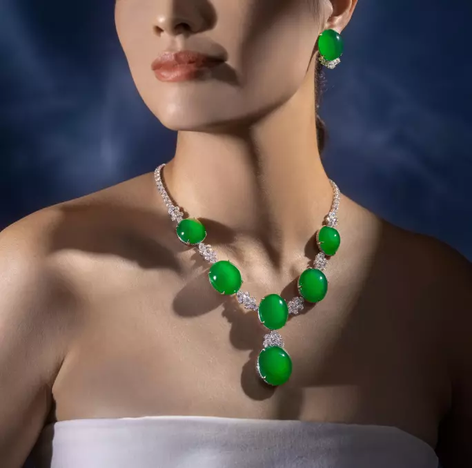
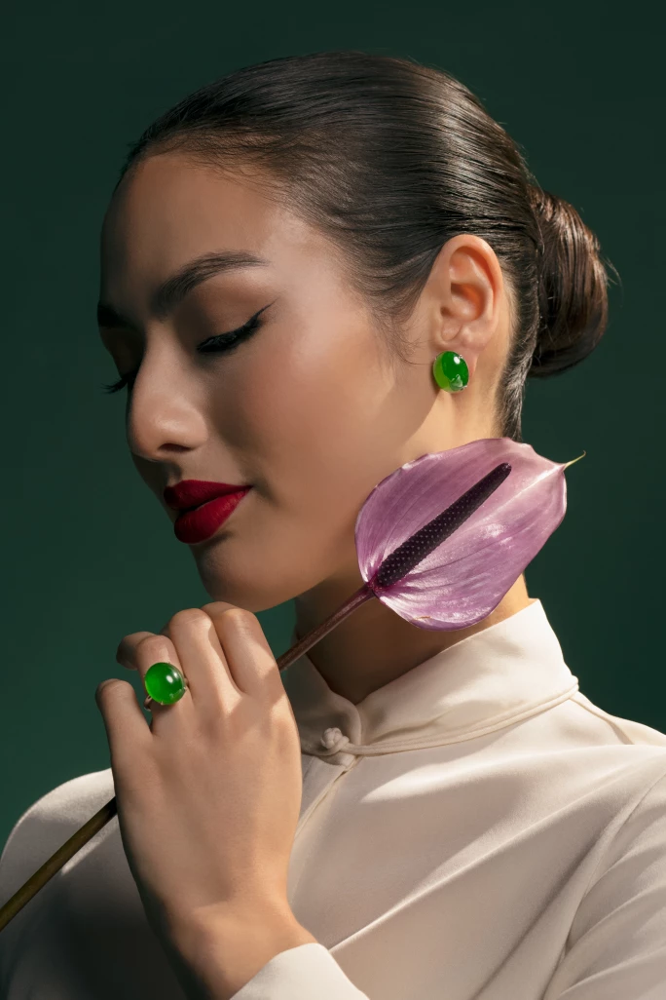
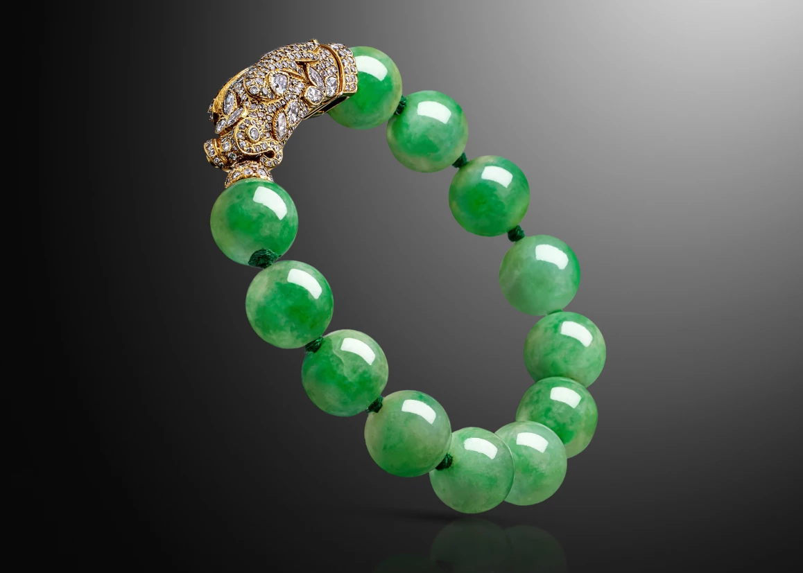
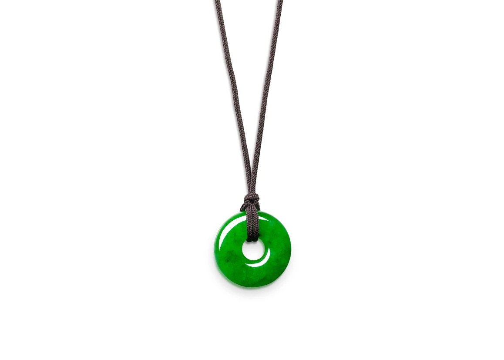
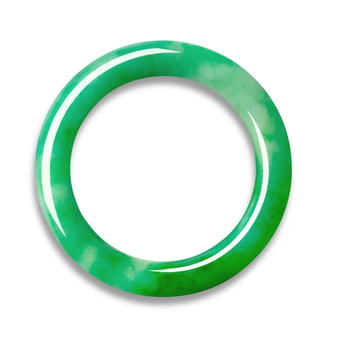

譯自徐倩怡 · Sotheby's Hong Kong · 2025年4月17日
乘著翠綠風潮，走進翡翠珠寶的世界，探索翡翠的悠久歷史，一窺蒸蒸日上的當代收藏市場。
玉文化在中華大地源遠流長，在八千年前的史前時代已經興起，有人謂「了解玉，就會了解中國和亞洲的文化。」玉有「天上之石」的美譽，在古代封建時期更是身分地位的象徵，天子貴族皆佩玉，且玉代表仁、智、勇、義、潔五德，儒家亦曰「君子比德如玉」，可見玉的精神價值。
時代變幻如流，唯玉文化相傳不斷，如今仍是健康和財富的象徵。在愛玉者眼中，即使是完美無瑕的鑽石亦不足與玉相比。玉分為軟玉和更珍稀的硬玉，而翡翠就是一種硬玉。翡翠一度是清宮御用材料；到了二十世紀初，法國珠寶設計師開始將翡翠融入設計，尤其是西方裝飾藝術盛行的年代，讓翡翠在亞洲以外地區開始受注目。近年，隨著當代珠寶界全新演繹翡翠，加上新一代人從翡翠的歷史底蘊中找到文化共鳴，這股東方之美強勢回歸，再度掀起熱潮。
翡翠珠寶魅力非凡，市場方興未艾
1985年11月，香港蘇富比率先為翡翠珠寶和中國工藝品分設專場，並另輯圖錄，在拍賣史上翻開全新一頁。此後近四十年裡，市場對翡翠珠寶的需求越見殷切，隨著時代品味變化，大眾對翡翠亦生出不同觀感。
在這場1985年的歷史性拍賣中，一套據傳曾屬慈禧太后的翡翠珠鏈配戒指和耳環套裝以286萬港元高價售出。蘇富比另辟專場拍賣翡翠珠寶一舉，開創先河，領先同儕，令香港成為有識之士尋覓上乘翡翠的首選之地。隨後幾年，翡翠項鏈、戒指和手鐲等翡翠首飾在拍賣會上炙手可熱，當中不少更是海外華人賣家委託的傳家之寶；在八十年代至九十年代初的鼎盛時期，在拍賣會登場的清代翡翠數量遠超現在。
翡翠艷麗高貴，卻又蘊藉低調；盈盈欲滴的鬱綠柔光，別具自然韻味，教人心馳神往。相比起鑽石的璀璨或紅藍寶石的閃耀，翡翠有一種靜謐優雅的氣質，清貴脫俗，總是靜待我們雙眼、光線、翡翠本身的三大元素結合，才煥發深邃潤澤的光芒。

璟瑶凝翠 | 拍品已售：31,910,000港元
二十世紀初，東方主義席捲歐美裝飾藝術領域，卡地亞等珠寶世家當然不會看漏充滿東方韻味的翡翠。二十至三十年代，各大品牌紛紛採用翡翠為設計元素，以當時流行的幾何風格鑲嵌翡翠、紅寶石和鑽石等寶石，融合東西方風格，創作出裝飾藝術風格珠寶。此類裝飾藝術時期的作品在拍賣會上往往備受矚目，在香港更是特別受歡迎，售價通常高於同時期的其他珠寶。
例如美國名媛芭芭拉・赫頓（Barbara Hutton）舊藏的扭紋翡翠手鐲，1988年在蘇富比拍賣會以略高於700萬港元成交。赫頓的收藏中還有一條「赫頓-姆季瓦尼」（Hutton-Mdivani）翡翠珠鏈，那是她與姆季瓦尼王子成婚時獲父親送贈的結婚禮物。這條項鏈由二十七顆歷史可追溯至清代的翡翠珠組成，配定制紅寶石和鑽石鏈扣。2014年，這條翡翠珠鏈在香港蘇富比以2億1,400萬港元天價成交，時至今日仍是全球成交價最高的翡翠首飾，亦是歷來最貴的卡地亞珠寶。當時有七位買家爭相出價，氣氛激烈，競投長達二十分鐘，終由卡地亞「抱得美人歸」，購回自家創作的項鏈，為品牌歷史添上令人津津樂道的一頁。

2023年4月 天然「帝王綠」翡翠耳環一對 及 天然翡翠戒指 成交價分別超於820萬港元和430萬港元
翡翠與帝王
相傳翡翠在十三世紀傳入中國。當時一個雲南商人經過現在的緬甸北部時，為了平衡騾子身上的兩邊重擔，撿起路邊的一塊巨礫，發現了內裡碧綠璀璨的玉石。翡翠輾轉進入宮廷後，王室貴族對這種翠艷的美石一見傾心，翡翠漸始成為宮廷之物。崇禎十七年（1644年）李老孺人墓中的翡翠手鐲，應是中國現存最古老的翡翠手工藝品。乾隆皇帝（1711–1799年）亦是其中一位最早的翡翠收藏家，在位期間將管治範圍擴大至緬北，直通和田，取得頂級和田玉和翡翠。正如乾隆皇帝在詩中所記，玉石開採後運往北京，只有宮廷作坊的御用工匠才獲准以這種珍貴的玉料製作玉器，這種玉石後來獲冠以「翡翠」一名。
翡翠珠寶的經典造型
良材在手，亦須經雕琢，才能化作美玉。翡翠是一種成份複雜的礦物，須經精湛工藝雕琢，才能突顯翡翠內的光波流轉，而圓形蛋面、玉珠和手鐲等光滑圓潤的形狀，就最能呈現頂級翡翠的晶瑩靈秀。圓形蛋面切割在十八世紀才傳入中國，是經典的翡翠切割方式，長寬比例和諧；至於玉珠則講求絕對勻稱、質色均配。手鐲整體呈圓形，需出自同一塊玉料，石材耗損最大，在三種切工中最難達致正濃陽均的標準，製作難度最高。

卡地亞 | 'Chimera' 天然翡翠珠 配 鑽石 手鍊 。拍品已售：393,700 港元 | 天然翡翠雕「懷古」吊墜項鍊 。拍品已售：241,300港元 | 天然翡翠珠 配 鑽石 耳環一對 。拍品已售：381,000港元
中西合壁，打造當代翡翠
翡翠早在一百年前已經風靡西方，在裝飾藝術時期流行一時；如今，當代珠寶設計師和各大珠寶品牌亦為翠綠欲滴的玉石吸引。1997年，香奈兒推出一套瑰麗矚目的翡翠首飾，將翡翠雕刻成香奈兒的經典山茶花圖案，與鑲嵌鑽石的葉子互相輝映。2000年10月，Christian Dior Joaillerie 的維多利亞・德・卡斯特蘭（Victoire de Castellane）亦與蘇富比合作，設計出充滿女性美的珠寶系列「Promesse」，作品中的鑽石宛如露珠，散落在翡翠樹葉上，突顯翡翠的純淨濃艷。系列中每件作品均單獨出售，單是項鏈就拍得356萬港元。數年後，蘇富比與瑞士奢侈品牌 De Grisogono 創始人方華之（Fawaz Gruosi）合作，讓香檳鑽和紅寶石與蛋面翡翠互相映襯，成為「高級珠寶的大膽宣言」。
近年，趙心綺（Cindy Chao）、陳世英（Wallace Chan）、JAR、Carnet 和劉孝鵬（Nicholas Lieou）等知名當代設計師都將翡翠融入新設計。當東方翡翠與西方元素相遇時，翡翠或與鑽石一同鑲嵌於白金首飾上，或與其他寶石互相輝映，呈現西方珠寶設計的精緻美學。不過，要將翡翠融入設計，同時要展現其內蘊之美，絕非易事。可幸的是，正因為融入了當代風格，欣賞翡翠的人越來越多，也有更多設計師漸漸明白從全球視角和品味來運用翡翠。蘇富比認為，當代翡翠珠寶市場發展尚未達至高峰，翡翠珠寶收藏擁有尚待開發的潛力，值得世人稱賞和國際認可。


天然翡翠手鐲